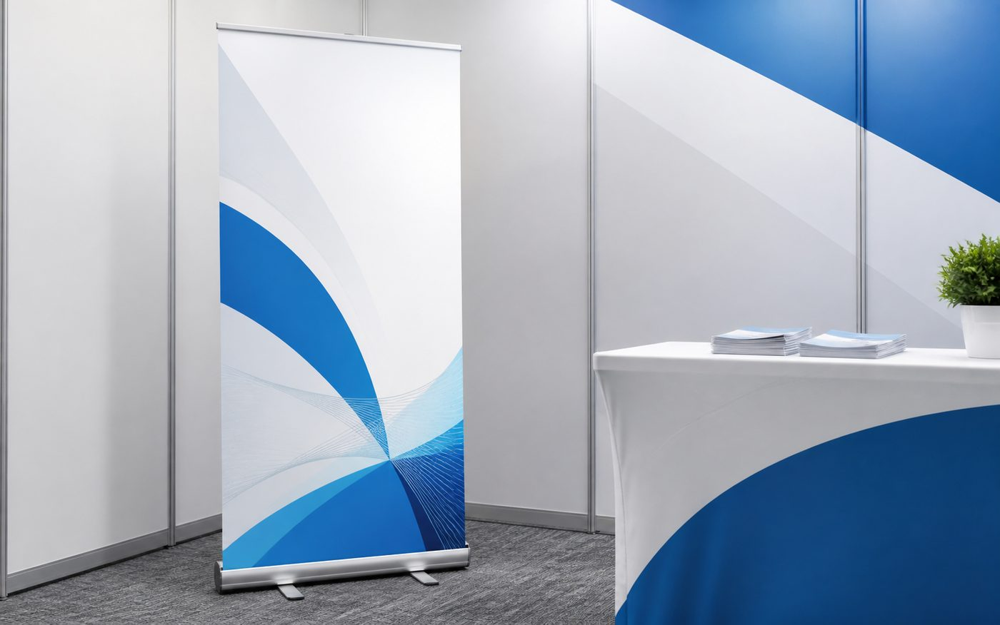

Trade Shows
Booth Visibility
Use one or two banner stands to frame your booth, explain your offer, and pull attention from the aisle.
Quote Banner StandsPrint & Displays
Portable retractable banner stands for trade shows, lobbies, check-ins, storefronts, and events, with design and proofing help through Say It.
Serving Tucson, Phoenix, Arizona, and nationwide business display orders.
Quick Fit
Banner stands are usually the first display piece a business should buy because they work in more than one setting.
Trade Shows
Use one or two banner stands to frame your booth, explain your offer, and pull attention from the aisle.
Quote Banner StandsFront Desk
Add a polished message near check-in, waiting areas, hiring tables, or service counters.
Get Quote HelpEvents
Carry your message to markets, presentations, open houses, pop-ups, and community events.
Start My Quote
Before Ordering
Tell us where the banner will be used, when you need it, and what people should understand in three seconds. We will help you choose the stand style and artwork direction.
How Say It Helps
Step 1
Share the event, lobby, storefront, or table setup where the banner stand needs to work.
Step 2
We help narrow the headline, logo placement, offer, and supporting details so it reads fast.
Step 3
You review the layout before production so the final display matches your brand.
Step 4
Production and delivery are planned around your event deadline and location.
Banner Stand FAQ
These are the questions most businesses should answer before requesting a banner stand quote.
Most businesses start with a standard retractable banner stand because it is easy to carry and works behind a table, beside a booth, or in a lobby.
Yes. Send your logo, brand colors, flyer, website, or rough idea. We can help clean up the layout before the proof is approved.
Yes. If you want to reuse it, keep the message simple and avoid dates, booth numbers, or one-time offers unless the banner is for a specific campaign.
Yes. Say It helps Tucson, Phoenix, Arizona, and nationwide businesses quote banner stands, prepare artwork, review proofs, and order around event deadlines.
Next Step
Send the deadline, where it will be used, and any logo or artwork you have. We will help with the cleanest quote path.